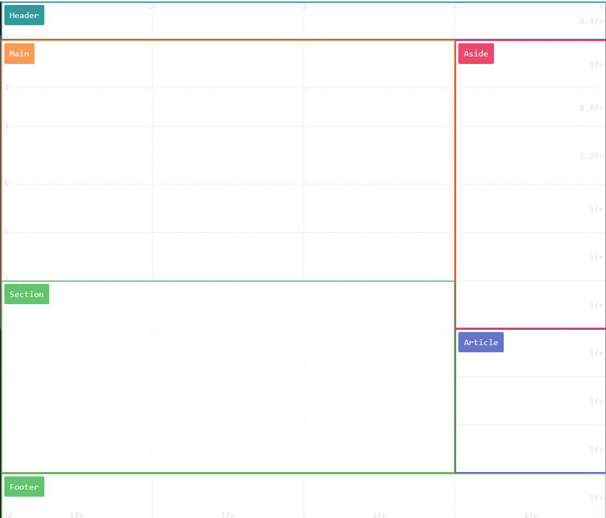
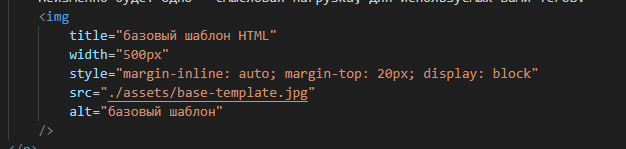

Мы научились писать заголовки и параграфы, отправлять пользователя по ссылкам, показывать ему изображения и писать списки. Но у вас могло остаться пара вопросов.
Очень важно понять что теги - это инструменты, и довольно гибкие. Мы можем вкладывать теги друг в друга, на пример мы можем в тег a вложить изображение. И когда пользователь нажмет на изображение его перенаправит на заданый вами сайт.
Мы так же можем создать локально новую страницу, указать путь до нее в атрибуте href и отправится по клику на нее.
На пример тег "header" - шапка, или тег "aside" - контент сбоку страницы.
Существует базовый шаблон страницы, однако стоит помнить, програмирование гибкое. От задачи к задачи все может менятся в зависимости от желаний заказчика, дизайнера или ваших собственных. Неизменно будет одно - смысловая нагрузка, для используемых вами тегов. 
В этой статье так же хотел бы вас познакомить, с очень полезным атрибутом "title". Этот атрибут позволяет создать подсказку, которую сможет увидеть пользователь, наведя на элемент. Вы можете понять принцип его работы наведя на картинку выше. 
Да, мы можем вкладывать теги друг в друга, но стоит помнить, что есть теги строчные и блочные . Перейдя по соответствующим ссылкам и озанкомившись с документацией, думаю вы и сами поняли, мы не будем класть в тег span блочные теги. На то есть пара причин
Советую в свободное время самостоятельно разобрать теги Input и Button
Назад, ко всем урокам